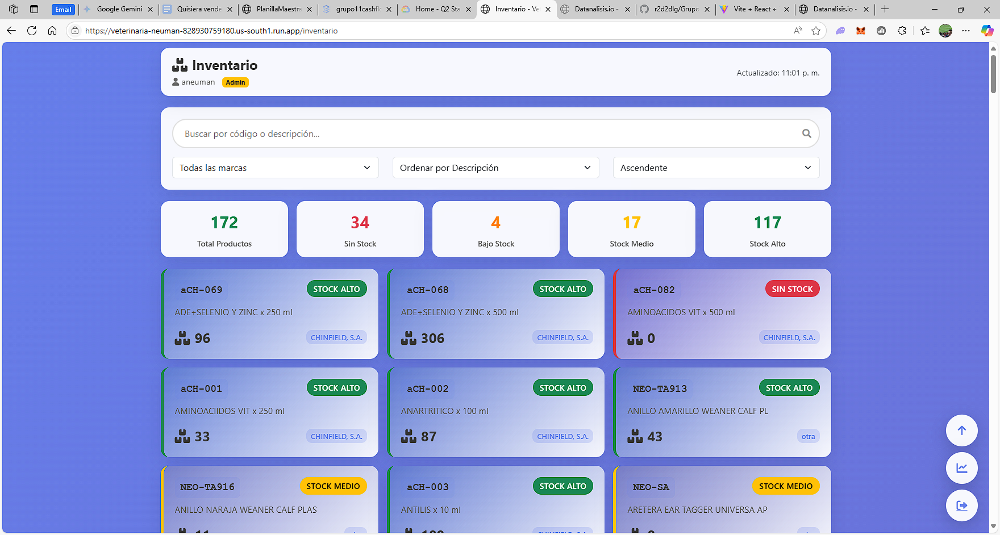
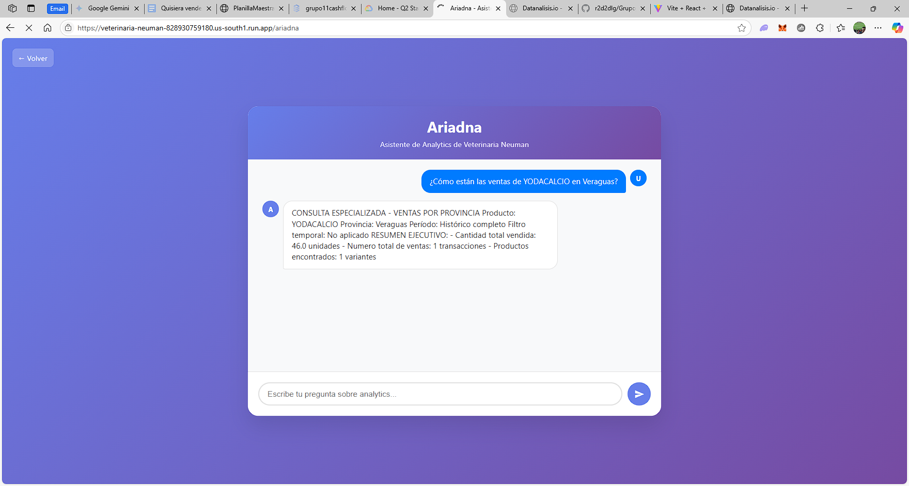

Farmacia Veterinaria Neuman
Distribuidor líder de productos veterinarios y alimenticios en Panamá.

El Desafío: Datos Aislados, Oportunidades Perdidas
Antes de aliarse con datanalisis.io, Farmacia Veterinaria Neuman enfrentaba obstáculos operativos que limitaban su crecimiento y eficiencia. A pesar de contar con un sistema contable como Sage, la información crítica no era accesible ni accionable para quienes más la necesitaban.
Los problemas principales eran:
- Falta de Visibilidad en Ventas: El equipo de ventas operaba a ciegas hasta el cierre de mes. La data, encerrada en reportes complejos de Sage, no ofrecía la claridad necesaria para que los vendedores entendieran su rendimiento en tiempo real ni para identificar oportunidades de mejora sobre la marcha.
- Gestión de Inventario Ineficiente: El inventario, también registrado en Sage, era una caja negra para el equipo comercial en campo. La única forma de consultar la disponibilidad de un producto era llamar a la oficina, un proceso lento y propenso a errores que resultaba en ventas perdidas y frustración.
- Decisiones de Inventario sin Respaldo Estratégico: La empresa carecía de métricas avanzadas para optimizar su inventario. No podían cuantificar el costo de oportunidad de los productos agotados ni el impacto financiero del exceso de stock, lo que afectaba directamente el flujo de caja y la rentabilidad.
Intentos previos de implementar otras soluciones tecnológicas habían fracasado por su rigidez y falta de adaptación a los procesos únicos de Veterinaria Neuman.
La Solución: Inteligencia de Negocios a la Medida por datanalisis.io
En datanalisis.io, nos posicionamos como el socio tecnológico estratégico que Veterinaria Neuman necesitaba. En lugar de una solución genérica, desarrollamos un sistema de analítica avanzada totalmente personalizado, atacando cada uno de sus dolores de cabeza.
Nuestra estrategia se basó en tres pilares:
-
Integración y Visualización de Datos en Tiempo Real: Creamos una plataforma que se integra directamente con Sage, transformando datos contables en inteligencia de negocios accionable.
- Dashboards para Vendedores: Ahora, el equipo comercial visualiza sus métricas de ventas en vivo. Esto les permite monitorear su progreso, entender qué clientes presentan oportunidades de venta adicional y, crucialmente, consultar el stock actualizado al instante desde cualquier lugar.
- Visión 360° para la Gerencia: Los directivos obtienen una perspectiva completa sobre la rentabilidad por cliente, necesidades por región y alertas tempranas sobre cambios en patrones de compra.
- Analítica Avanzada para una Gestión de Inventario Inteligente: Implementamos un módulo de analítica que ofrece una visión clara y profunda del inventario. La gerencia puede identificar fácilmente productos de alta y baja rotación, comprender cuáles son vitales para mantener en stock y tomar decisiones de compra basadas en datos sólidos, optimizando el flujo de caja. 
- Empoderamiento a través de la Inteligencia Artificial: Introdujimos a "Ariadna", un Asistente de IA personalizado que democratiza el análisis de datos. El personal administrativo y gerencial ahora puede realizar consultas complejas en lenguaje natural, como “¿Cuál fue mi producto más vendido en Chiriquí el mes pasado?”, obteniendo respuestas instantáneas y precisas. 
Resultados: Transformación Basada en Datos
La colaboración con datanalisis.io no solo resolvió los problemas iniciales, sino que impulsó a Veterinaria Neuman hacia una nueva etapa de madurez operativa y estratégica.
- Toma de Decisiones Acelerada y Precisa: La gerencia y el equipo de ventas ahora toman decisiones basadas en información relevante y oportuna.
- Eficiencia Comercial Disparada: Los vendedores optimizan sus rutas y visitas, sabiendo exactamente qué ofrecer y qué hay en stock, mejorando su rendimiento y la satisfacción del cliente.
- Optimización del Flujo de Caja: Una estrategia de inventario basada en datos ha reducido los costos asociados al exceso de stock y ha minimizado las pérdidas por quiebres de inventario.
- Cultura Analítica Integrada: Ayudamos a incorporar la analítica como parte del ADN de la empresa, generando valor sostenible a largo plazo.
Farmacia Veterinaria Neuman pasó de reaccionar a los datos a gestionar su negocio de forma proactiva, convirtiendo su información en una de sus ventajas competitivas más importantes.